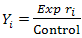
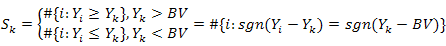
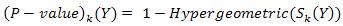
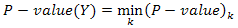

Hypergeometric analysis
This method was designed for identification of down- and up-regulated genes.
Unlike other up and down identification methods for the same purpose, it compares expression levels to some constant level
(BV - Boundary Value), and measures for a given expression profile the probability of obtaining
expression values that are higher (in the case of up regulated genes) or lower (for down-regulated genes)
than BV by randomly permutating of the input table and deriving random row from it. If the control is set, the the program will first
divide data in the experiment table according to the average value from the control set.
As input we have one or two tables with names of genes as keys and rows containing the expression values.
Note: If control is set then result will be calculated only for elements which are present in both experimental
and control tables!
For each gene we test the null hypothesis and calculate a score that accumulates the information obtained for the
gene: The sign of the score indicates whether the gene is found to be up- or down-regulated, the absolute value of the score is equal to log(P-value) where P-value is the probability of mistakenly considering the gene element as disregulated
(lower P-value (hence higher absolute score value) means more reliable result).
Note: elements are considered in the context of whole element pool, considering that for almost every
element from table null hypothesis is true (experiment and control are not different significantly).
Method have rank character it does take into account only relationships between values so it
is very robust to outlines.
References:
-
Y.V.Kondrakhin, R.N.Sharipov, A.E.Kel, F.A.Kolpakov. (2008)
Identification of Differentially Expressed Genes by Meta-Analysis of Microarray Data on Breast Cancer,
In Silico Biology, 8: 383-411.
Parameters:
- Experiment - experimental data for analysis.
- Table - a table data collection with experimental data stored in the BioUML repository.
- Columns - the columns from the table which should be taken into account.
- Control - control data for analysis (not obligatory).
- Table - a table data collection with control data stored in the BioUML repository.
- Columns - the columns from the table which should be taken into account.
- Output type - the type of genes to be included in the result table:
- Up- and down-regulated
- Up-regulated
- Down-regulated
- P-value threshold - the threshold for the P-value (only genes with lower P-value will be included in the results)
- Outline boundaries - lower and upper boundaries for values from the input table. Outliers will be ignored.
-
Boundary value - an expression will be compared with that value.
If you want to compare experimental data with control you should set it equal to 1.
-
Calculate FDR - the test method for calculation of False Discovery Rate (FDR) -
an average rate of mistakenly found up or down
regulated genes with a given P-value threshold. It random permutates the data 50 times and applies
hypergemetric test to each randomized set. FDR is calculated separately for up and down regulated
genes according to the formula:
- Detailed output - whether some technical information will be included in result or not.
-
Output table - the path in BioUML repository where the result table will be stored.
If a table with the specified path already exists it will be replaced.
Method details
Let us denote: Y = {Y1, ...,Ym} — as the measurements
of the gene expression for m patients, where:

is the ratio of actual and control signals.
The analysis checks the hypothesis H0: Yi = BV ∀i.
BV (Boundary Value) — - is designed for discrimination between up- and down-regulation.
As a critical statistic we use:

In the case that the H0 hypothesis is true, our statistic will be distributed like hypergeometric
random value with parameters N, M, n, m, where
- n is the total number of clones(genes) which expression is measured in experiment.
- M is the amount of values which are greater or equal then Yi
- N = mn is the total amount of expression measurements in the table.
- m is the total number of patients.
We suppose that for almost all genes in the table the H0 hypothesis is true.
So, for every statistic we estimate temporary P-values as:

As final P-value for gene we take:

Finally a gene is considered as
- Up-regulated if the expression value with the best P-value is lower than BV, and the P-value passes threshold.
- Down-regulated if the expression value with the best P-value is greater than BV, and the P-value passes threshold.
P-value here is the estimated probability of this consideration to be wrong.